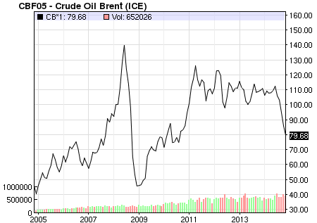

2014-11-24 22:28:00
最近五個月，原油價格跌了將近1/3，對諸產油國的財政收支帶來了很大的衝撃。恰巧的是，有種不聽美國擺布的國家裡，除了中共和其所支持的北韓以外，基本上都是靠出口原油換來的膽子，例如俄國、伊朗和委内瑞拉，而他們也都在這輪油價的跌勢裡，吃盡了苦頭。尤其是俄國，原本已經因為歐盟的制裁而面臨經濟困難，一旦占其出口總額2/3的油氣能源價格大跌，其整體經濟前景便極為暗淡，國内外資金因此而外逃，使盧布也跌了1/3。俄國的財政部長Anton Siluanov日前估計歐盟制裁對俄國經濟造成的年損失為400億美元，因油價跌到大約$80一桶所受的損失卻高達1000億美元，而俄國可用的外匯只有2700億美元，所以這也就是為什麼最新一期的《經濟學人》（《Economist》，英國的著名經濟週刊）幸災樂禍地預言普丁將在两年内下台。

北海原油（Brent Crude）名義價格（Nominal Price）的十年圖，今天（2014年十一月24日）的收盤價是$79.68。名義價格没有考慮通貨膨漲，如果改用定值（Constant Value）美元，曲線的左邊會向上提升一些，所以現在的油價大約等同於2005年和2006年的水準，但是2004年以前和2009年初的油價仍比現在便宜。換句話說，雖然目前的油價和過去十年相比是處於較低的價位，和過去三十年來比其實還算是高的。只是由儉入奢易，由奢入儉難，產油國享受慣十年的好日子，一下子重回歷史常態就受不了了。
至於為什麼會有供需不平衡導致油價下跌，大家都同意有三個原因：首先是過去十年推高油價的中國的能源需求成長率從以往的5-10%跌到了今年的4%。其次是美國開發了大量的頁岩油，在最近幾年替代了美國大約一半的原油進口量。而所有的主要產油國，包括原本受戰禍影響的伊拉克和利比亜，在今年都持續增產；尤其是沙烏地阿拉伯，以往一直是唯一能在油價下跌期間顧全大局，以减產來穩定供需平衡的國家，但是這一次卻產能全開，以致原油供需完全失衡。由於三個因素裡面，美國直接控制了頁岩油，而沙烏地阿拉伯則是美國的忠實“盟友”，所以有人提出了陰謀論，認為這次的油價下跌是美國設計來打撃俄國的手段。我個人對此是存疑的：因為頁岩油的技術突破是十幾年前的事，其產量的大幅穩定增加則完全是受2011年後高油價的影響，和美國政府没有關係。所以即使沙烏地阿拉伯是受了美國的勸托或為了打撃死敵伊朗的經濟或是反過來為了與頁岩油競争而拼命抽油，大環境上還是運氣使然。
不論為什麼沙烏地這次會不顧油價走勢而維持產能，原油已經即將跌到一個非常重要的支撑點，也就是頁岩油的生產成本。頁岩油是一種所謂的“緊油”（Tight Oil），開採時必須使用許多物理和化學手段把它和周圍的頁岩分離開來，因此很多頁岩油必須賣到$50至$80一桶才有合理的利潤。而且每一個頁岩油井的產油壽命很短，只有不到两年，所以一旦價銭跌下去，新投資不再合算了，過了一年多，所有的頁岩油產能就自動過時。目前世界上成本超過$80一桶的緊油就有每天260萬桶的產能，到2015年底這些產能應該都會消失。如果油價再往下跌，消失的產能會增加得很快。所以總體來看，$79一桶的油價已經没有太大的下降空間，即使跌下去也只是2015年一年而已；只要中共繼續提供足够的金融支持，普丁撑下去的機會是不小的。